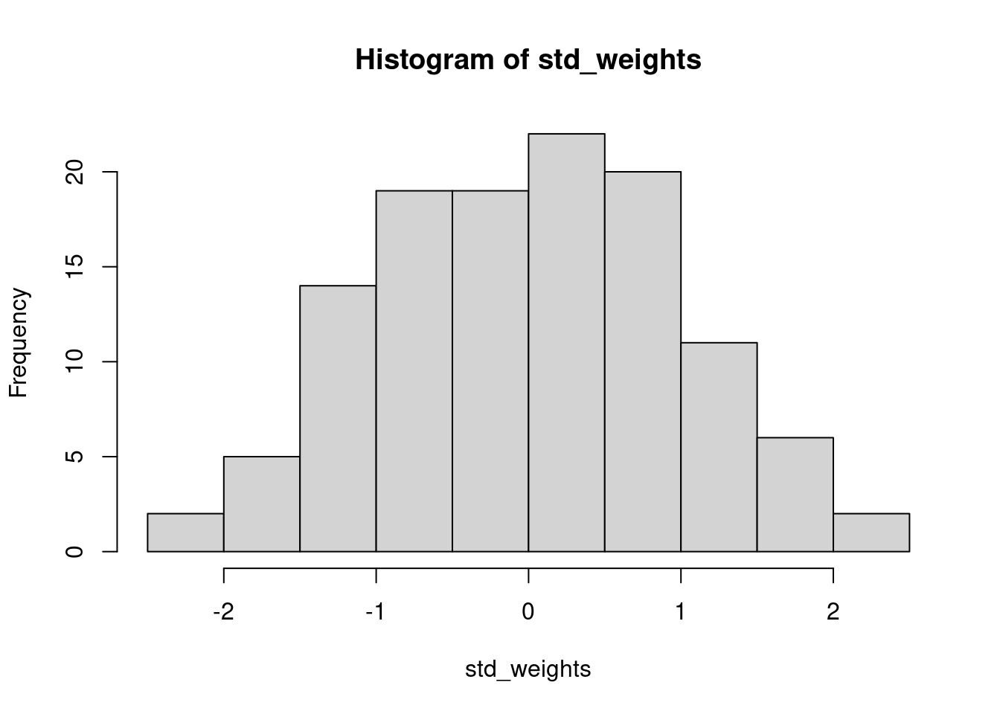

2.6 The Standard Normal Distribution
In the real world, we typically do not know what the parameters are underlying our distribution (i.e. we would have know way of knowing what the mean and standard deviation of guillemot weight are). We also often work with data that are normally distributed, but could not have negative values. Remember that the support of the normal distribution is all numbers from \(-\infty\) to \(+\infty\). Adult guillemots, however, cannot have negative weight. Thus, we first need to centralize and standardize the data so that we know what the mean and standard deviation are.
Centralizing data means we subtract the mean value of our sample from every single observation, such that we are left with a mean value of 0. Standardizing data is a way of transforming it so that variables are more comparable across different data sources, and also so that we can easily compare standard deviations. To standardize data, we convert it to Z-scores. For each observation \(x\), we subtract the mean \(\bar{x}\) and then divide that value by the standard deviation \(\sigma\). The equations to do this for a sample are below; \(SS\) stands for the sum of squared residuals. Note that we divide the sum of squares by n-1, rather than n, because we are dealing with a sample rather than population. The degrees of freedom is the number of observations we have, but we lost one degree of freedom when we calculated the sample mean \(\bar{x}\). \[Z = (x -\bar{x})/\sigma\] \[\sigma = \sqrt{\sigma^2}\] \[\sigma^2 = \frac{SS}{(n-1)}\] \[SS = \sum_{i=1}^{n}(x_i - \bar{x})^2\]
2.6.1 Functions
To standardize our data we need to center it (subtract the mean) and standardize (Z transform) the data. We will create functions in R to do this for us quickly. There are many inbuilt functions in R, such as the ones we have been using already (e.g. rnorm, hist, sum, etc.) and you can also install packages that contain functions which other people have written. You can also write your own custom functions. This is extremely useful when you want to repeat an operation many times without using up many lines of code (the more lines of code, the more likely you are to end up with an error, or something difficult to fix later on).
First, we will create a function that calculates just the sum of the squared residuals. To create a function, we need to name it just like an object, but pass to it a function() containing arguments that the function accepts. In this case, it is a function that will take a vector x. Inside the {} brackets we place the instructions for what to do with x and what to return from the function. Only the object that is specified will be returned (i.e. xbar, res, and squares will not be saved to your environment, only ss).
sum_squares <- function(x){
xbar <- mean(x) # mean of the sample
res <- x - xbar # residuals
squares <- res^2 # squared residuals
ss <- sum(squares) # sum of the squared residuals
return(ss) # what should the function return
}We can also nest functions inside other functions, which can make it a lot easier to keep your code neat and tidy. Below is a function to standardize data which uses the other function we just created.
standardize <- function(x){
xbar <- mean(x)
n <- length(x)
ss <- sum_squares(x) # note we call our function from earlier
s2 <- ss/(n - 1) # variance = sum of squares divided by n - 1
s <- sqrt(s2) # calculate standard deviation from variance
z <- (x - xbar)/s
return(z)
}
# use this function to standardize adult guillemot weights that we generated
# earlier and plot the output. how does it differ from the original?
std_weights <- standardize(adult_weights)
hist(std_weights)
# Note that we now have negative weights, however, the interpretation is simply
# that these individuals are below the mean, and positive values are above itOne of the nice things about the standard normal distribution is that we know that the mean is 0 and the standard deviation is 1. This means that now, when we ask about the probability of observing an adult guillemot with a standardized weight of some value or higher and our null is 0, we are asking if that individual significantly differs from the sample mean. We also know the standard deviations, and instead of having to calculate the integral at different cutoffs, this has already been done. Prior to advances in modern computing, this was done manually, and there were huge lookup tables at the back up statistics textbooks that would tell you the p-value associated with different z-scores. Thankfully, now we have R.